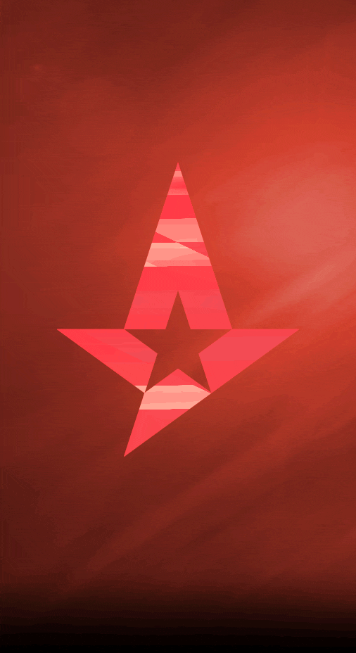

Astralis, fondée en 2016 et basée à Copenhague, incarne l'essence de l'excellence
dans le monde de l'Esport et en particulier, dans la discipline emblématique de
Counter-Strike.
Il y a eu plusieurs époques dans l’histoire de Counter-Strike,
définies par une poignée de rosters qui ont conquis le paysage
professionnel du jeu pendant des années.
Mais aucun n’a dominé comme Astralis.
On les a qualifiés d'équipe maudite.
Ils ont connu des hauts incroyables et des bas dévastateurs.
Mais ils ont façonné toute une époque et redéfini ce que pourrait être une dynastie
dans Counter-Strike.
Nous allons découvrir ensemble, comment 5 joueurs de haut niveau ont décidé
de monter une structure et qui ont établi une domination de la scène Counter-Strike
jamais vu auparavant.
C'est l'histoire de la plus grande équipe de Counter-Strike à ce jour. C'est l'histoire d'Astralis.